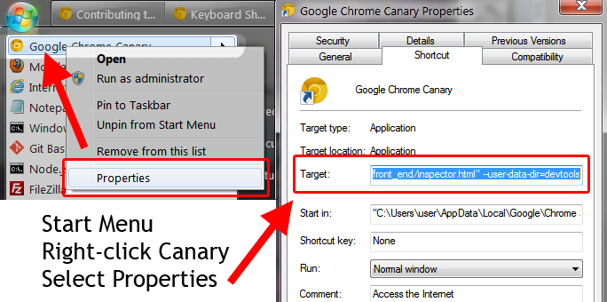

There are many ways you can improve the productivity of your fellow developers. That could be by sharing what you know or helping out with documenting features or writing a patch to improve the tools we all use.
Aside from contributing to the source code for DevTools, all of the following are different ways you could help contribute:
Read on to learn how to contribute a patch to DevTools source.
The Chrome DevTools are actually a web app written in JavaScript and CSS. If you're familiar with these technologies, you know enough to write a patch. A few folks have already done this, giving us a colorpicker, a file picker and other features, all contributed by developers just like you.
IRC channel on Freenode: #chrome-devtools and #blink
In this guide, we'll cover how to get set up and running locally so you can start developing and contributing to the DevTools. You may also find it helpful to read the Chromium guide for contributing code.
Note: You will need to sign and submit a completed CLA (Contributor License Agreement) before we are able to consider any contributions you may wish to make.
There are a few things you need in order to contribute to DevTools.
Get the code
Download the Blink source code by cloning the
git repository. This process
can take anywhere between 30-60 minutes (depending on your connection).
git clone https://chromium.googlesource.com/chromium/blink
Install Canary
While Blink downloads, install Chrome Canary on Mac OS /
Windows or download the latest
Chromium build.
Note: To save you time, we created a helpful bash script that can take care of some of the grunt work for you.
Serve devtools frontend
Run a local web server. The local web server will serve files from the directory
blink/Source/devtools on some port (e.g. 8000).
After the Blink repository has finished downloading go to the devtools folder:
cd blink/Source/devtools
From there you can run a SimpleHTTPServer using Python with the following
command:
python -m SimpleHTTPServer
Why does the server need to run from the devtools directory?
When remotely debugging and developing the front-end of Blink, the content of the
InspectorBackendCommands.js file is generated based on the content of
protocol.json instead as a fallback of the Chromium build system. The
protocol.json file is in the parent folder of the front_end folder which is
/devtools. This is why you need to run the web server from within the devtools
directory.
Note: If you have checked out the entire Chromium source you will need to
run the web server from /src/third_party/WebKit/Source/devtools instead.
If your feature requires changes to the back-end code then you definitely need to checkout and build Chromium. Otherwise, you only need to setup a web server for the front-end files and run Chrome with remote-debugging options.
Note: protocol.json describes the API between front-end and back-end. It is
used for generating API stubs for the front-end and back-end at the build stage.
When remote debugging the front-end part of the API, InspectorBackendCommands.js
is generated on the fly by front-end code. For more information, read the Chromium How-tos.
Install depot_tools
You will need to install the
depot_tools in
order to upload your patch once your changes are completed. The
depot_tools are a
package of scripts used to manage checkouts and code reviews, and it includes
commands gclient, gcl, and git-cl and will be useful later on. You will
still want to sync your Chromium checkout with all its dependencies however.
Download depot_tools by cloning the repository:
git clone https://chromium.googlesource.com/chromium/tools/depot_tools.git
Then you will need to add it to your
PATH.
Do this by adding the following to your .bashrc or .bashprofile file or your
shell's equivalent at the end of the file. This way you won't need to reset your
$PATH manually each time you open a new shell.
export PATH="$PATH":pwd/depot_tools
Windows
This guide is currently not tested on Windows due to not being able to
successfully add depot_tools to the PATH while using the default CMD line of
Windows. However, you can try Cygwin as an alternative solution. Here you can find steps for installing
depot_tools on Windows with
Cygwin.
Note: This guide includes steps for Windows throughout it, but has not been confirmed to work due to the inability to `add depot_tools` to the PATH, while using the Windows CMD line.
To begin, get an edge-build of Chromium. These are available for all platforms.
There are a couple of command line
flags (or
switches) that are needed when running Chromium for developing DevTools.
Running Canary with
flags:
On Windows
For example:
"C:\Users\%username%\AppData\Local\Google\Chrome SxS\Application\chrome.exe" --remote-debugging-port=9222 --no-first-run --remote-debugging-frontend="http://localhost:8000/front_end/inspector.html" --user-data-dir=blink/chromeServerProfile

Note:It's a good idea if you copy the path in Target to a text editor so you can see the full value while adding the flags with a space between each one to the end of the path. Then paste the entire line into the field.
On OS X
/Applications/Google\ Chrome\ Canary.app/Contents/MacOS/Google\ Chrome\ Canary --remote-debugging-port=9222 --no-first-run --remote-debugging-frontend="http://localhost:8000/front_end/inspector.html" --user-data-dir=blink/chromeServerProfile
Note: You will need to escape any spaces in the path with a slash "\ " as shown in above.
chromium-browser --remote-debugging-port=9222 --no-first-run
--remote-debugging-frontend="http://localhost:8000/front_end/inspector.html"
--user-data-dir=blink/chromeServerProfile--user-data-dir=blink/chromeServerProfile--remote-debugging-port=9222--remote-debugging-frontend="http://localhost:8000/front_end/inspector.html"--no-first-runchromeServerProfile to be some writable directory in your system. This refers to the --user-data-dir flag value mentioned above, which specifies a directory where the browser profile will be stored. You may wish to adjust the actual location of this profile directory to be something other than the blink folder.
Once Canary is open go to any web page (the page doesn't matter because you're
not going to use it for anything). Open up the DevTools for the page, and undock from the window so it is in a separate window.
Next, open a new tab or launch another instance of Chrome (either Chrome Stable or Canary) and go to http://localhost:9222.
Here you will see a grid menu of every page that is currently open which you are able to inspect and debug.
This grid menu is served by a small web server running inside the first instance
of Canary which the --remote-debugging-port=9222 parameter was passed into.
Since the web server is running from your local git repo in the
/blink/Source/devtools directory, so the files within the devtools folder will
be used for the inspector you see when clicking any of one these pages.
Clicking on the Developer Tools thumbnail opens up a second instance of the DevTools, which is inspecting the first undocked DevTools instance.

Nice job, so far!
Notice that the URL address of the second DevTools instance points to
http://localhost:8000/front_end/inspector.html
This is because of the command line parameter
--remote-debugging-frontend="http://localhost:8000/front_end/inspector.html"
that was passed into the first instance, before running Canary. It connects to
your local repo through a websocket, which you may notice, is part of the URL
?ws=localhost:9222/devtools/.
Now you can [start
contributing](http://dev.chromium.org/developers/contributing-code) and
developing the DevTools front-end code located in the directory
/blink/Source/devtools/front_end.
Now that you are ready to dig into the code and start developing the DevTools source, head over to [http://crbug.com](http://crbug.com) and find the ticket for your change and leave a comment saying you will be writing a patch for it. If you haven't decided on what you to change look through the open issues and choose one you would like to do and leave a comment on it asking for it to be assigned to you.
Note: We occasionally label bugs that require a small patch but make for good first-time contributions with GoodFirstBug. You can [filter](https://code.google.com/p/chromium/issues/list?q=label:GoodFirstBug) down the issues list to only display these.
Alternatively, if there is no existing ticket for the change, then create a new issue. Be sure to describe what the change is and justify why it was needed, adding "patch to follow" to the end.
Communicate
Before you start
contributing on a
ticket, it's a good idea to open a new thread on the DevTools Google
Group
so you can discuss anything you are unsure of or may not know about regarding
the particular ticket you will be working on. You can never over communicate.
Pull the latest files from the repository and sync to be sure you are working
with the latest code.
git pull --rebase && gclient sync
Then create a new branch which you can make your changes on.
git checkout -b yourBugOrFeatureName
Open the DevTools on your DevTools, open your favorite code editor and start
digging through the files in your local repository directory
/blink/Source/devtools/front_end.
Note: During development use the Refresh icon or Alt + R instead of F5, Ctrl + R or Cmd + R as they are bound to refresh the host page which you are using to develop the DevTools instance.
Run your change against the Closure Compiler with:
./devtools/scripts/compile_frontend.py
You should see "0 error(s), 0 warning(s)".
Your code:
Once you have made your change, commit it. In your commit message include the ticket number and specify that it's a DevTools patch.
git commit -m "#175024 DevTools: This describes the Goat Teleporter"
It is a good idea to pull down any changes that have been added since you last did one and merge them with your branch.
Once everything for your patch is complete, you will want to write and run relevant layout tests. To get started with layout tests for the DevTools see the WebKit layout tests guide.
Note: If your patch includes changes that require writing new unit tests or UI tests, they will need to be created and included as part of the patch.
If your patch is finished and all tests pass, upload your changes:
git cl upload --bypass-hooks
Your editor prompts you to write the patch description. Explain the change in much detail as you like. Save and exit the editor to finalize the patch submission.
You must have an account for codereview.chromium.org and you'll enter in your
credentials in this process. Afterwards, you'll get the codereview URL e.g.
Issue created. URL: https://codereview.chromium.org/18173008".
Take note of this URL, you can go to the page and view the status of it.
Now you just have to wait for your friendly neighborhood reviewers to check things out to make sure it's all good.
Cleanup
Go back to master branch.
git checkout master
The* 'cr' bash script*
As mentioned earlier, cr is a bash script compiling steps from
several Chromium wiki pages into a simple, easy-to-use command line tool. It is
able to grab the source code of the browser, making sure along the way that you
have all the dependencies you need, and sets everything up so that you can go
ahead and build your very own browser!
Its commands, like cr clone or cr update, do all the work for you, while
asking you the important questions. You can find more information and
installation instructions at
https://github.com/jankeromnes/cr.
Below are a couple alternative perspectives from some of the contributors who described their workflows and some tips you might find helpful along the way. If you run into any issues following the steps outlined in this document above, we've documented these to help you troubleshoot things should you run into any issues.
You get to pick between two workflows: merge or rebase. Both are
"mathematically equivalent" but you use different commands. Unless you are a
git uber-guru, the workflows and thinking for each are different.
About half of the contributors to Chromium use this rebase workflow.
git rebase -i master. It pops open an editor with a bunch of pick XXXX lines. Change all but the first pick. _to _squash. Use s to replace the word pick.The merge workflow is slightly less work but you end up with merge revisions
in your history. Also, it can be harder to think of it in such that the
code/patch which you are authoring will eventually be something you apply to
master.
[verbose-name]-[issue-number] (e.g. "drawer-status-bar-231904"). This makes
easier to find in which branch your issue lives and vice-versa. It'd be great
to assign issue to yourself and mark it as "started" so that nobody else
starts doing same job.git cl upload. The first time you have to fill in the commit description and mention issue number, for example "BUG=231904". You will be asked for patch description later on and they all will be attached to the same codereview issue. See "Patch Set #1", "PatchSet #2"... at https://chromiumcodereview.appspot.com/14329024/git cl upload suggests reviewers.Sometimes you may need to rebase if the "commit" button fails on codereview page. Some reviewers don't like rebasing during a codereview since it makes reviewing harder for them.
While waiting for comments you can switch to another branch and work on a fix for another issue while this one is "frozen", waiting for review.
To setup a build that can run the layout tests read about layout tests over on Chromium.org. Depending on the type of patch you are submitting, there may be Chrome DevTools layout tests you will want to run before submission.
First, run gclient to use git. You can follow the steps located in the Chromium Using Git guide to walk you through this process. In summary make sure depot_tools is in your path. Run fetch blink --nosvn=True in a directory you wish to store the Chromium source (perhaps get a snack or one of those paddles with a ball on it, this will take some time).
When this has finished you can speed up the build process by building the content shell.
On a Mac or Linux machine you can simply run:
ninja -C out/Debug content_shell
If you have problems with this step you can look at Clang for Mac help and the Linux build instructions for Linux help.
This will also take some time. Once it has finished providing you with warmth from your laptop then you are
good to run the layout tests which can be run with from your src directory
webkit/tools/layout_tests/run_webkit_tests.sh. Replace the .sh with .bat if you
are on Windows. Some failures are expected! (unfortunatly). A good process here
is to run them before you make any changes, then run them after you make your
changes. It can also take an argument to a directory so you can just point it to
the LayoutTests/inspector directory to run.